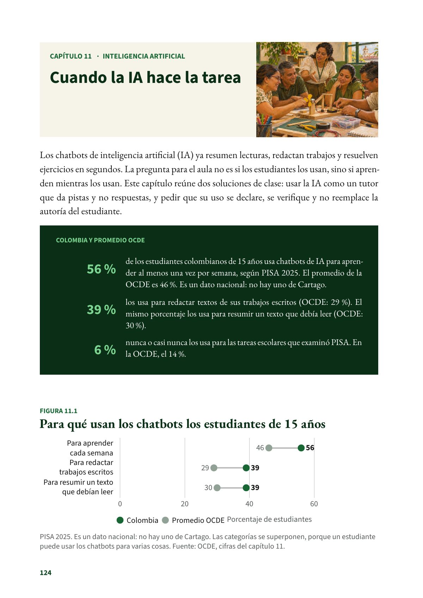
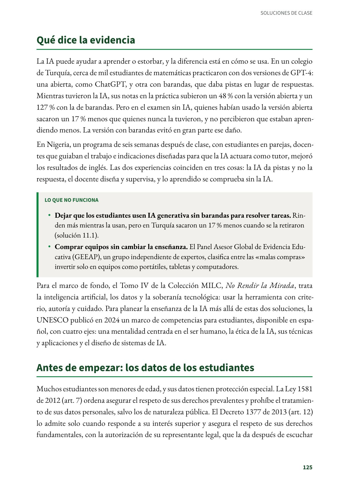
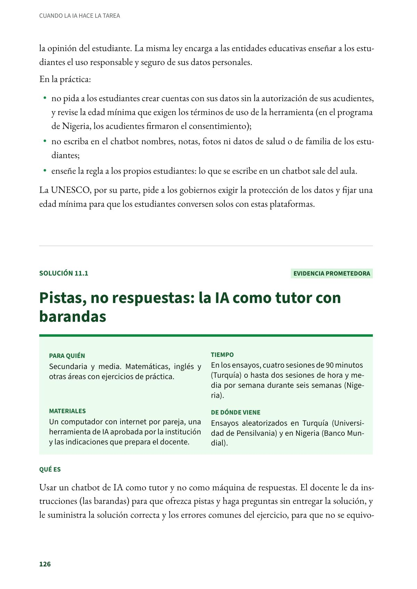

Cuando la IA hace la tarea
Los chatbots de inteligencia artificial (IA) ya resumen lecturas, redactan trabajos y resuelven ejercicios en segundos.
PDF · 3 págs. · 902 KBLos chatbots de inteligencia artificial (IA) ya resumen lecturas, redactan trabajos y resuelven ejercicios en segundos. La pregunta para el aula no es si los estudiantes los usan, sino si aprenden mientras los usan. Este capítulo reúne dos soluciones de clase: usar la IA como un tutor que da pistas y no respuestas, y pedir que su uso se declare, se verifique y no reemplace la autoría del estudiante.
El problema en Cartago
- 56 % de los estudiantes colombianos de 15 años usa chatbots de IA para aprender al menos una vez por semana, según PISA 2025. El promedio de la OCDE es 46 %. Es un dato nacional: no hay uno de Cartago.
- 39 % los usa para redactar textos de sus trabajos escritos (OCDE: 29 %). El mismo porcentaje los usa para resumir un texto que debía leer (OCDE: 30 %).
- 6 % nunca o casi nunca los usa para las tareas escolares que examinó PISA. En la OCDE, el 14 %.
Qué dice la evidencia
La IA puede ayudar a aprender o estorbar, y la diferencia está en cómo se usa. En un colegio de Turquía, cerca de mil estudiantes de matemáticas practicaron con dos versiones de GPT-4: una abierta, como ChatGPT, y otra con barandas, que daba pistas en lugar de respuestas. Mientras tuvieron la IA, sus notas en la práctica subieron un 48 % con la versión abierta y un 127 % con la de barandas. Pero en el examen sin IA, quienes habían usado la versión abierta sacaron un 17 % menos que quienes nunca la tuvieron, y no percibieron que estaban aprendiendo menos. La versión con barandas evitó en gran parte ese daño.
En Nigeria, un programa de seis semanas después de clase, con estudiantes en parejas, docentes que guiaban el trabajo e indicaciones diseñadas para que la IA actuara como tutor, mejoró los resultados de inglés. Las dos experiencias coinciden en tres cosas: la IA da pistas y no la respuesta, el docente diseña y supervisa, y lo aprendido se comprueba sin la IA.
Lo que no funciona
- Dejar que los estudiantes usen IA generativa sin barandas para resolver tareas. Rinden más mientras la usan, pero en Turquía sacaron un 17 % menos cuando se la retiraron (solución 11.1).
- Comprar equipos sin cambiar la enseñanza. El Panel Asesor Global de Evidencia Educativa (GEEAP), un grupo independiente de expertos, clasifica entre las «malas compras» invertir solo en equipos como portátiles, tabletas y computadores.
Para el marco de fondo, el Tomo IV de la Colección MILC, No Rendir la Mirada, trata la inteligencia artificial, los datos y la soberanía tecnológica: usar la herramienta con criterio, autoría y cuidado. Para planear la enseñanza de la IA más allá de estas dos soluciones, la UNESCO publicó en 2024 un marco de competencias para estudiantes, disponible en español, con cuatro ejes: una mentalidad centrada en el ser humano, la ética de la IA, sus técnicas y aplicaciones y el diseño de sistemas de IA.
Antes de empezar: los datos de los estudiantes
Muchos estudiantes son menores de edad, y sus datos tienen protección especial. La Ley 1581 de 2012 (art. 7) ordena asegurar el respeto de sus derechos prevalentes y prohíbe el tratamiento de sus datos personales, salvo los de naturaleza pública. El Decreto 1377 de 2013 (art. 12) lo admite solo cuando responde a su interés superior y asegura el respeto de sus derechos fundamentales, con la autorización de su representante legal, que la da después de escuchar la opinión del estudiante. La misma ley encarga a las entidades educativas enseñar a los estudiantes el uso responsable y seguro de sus datos personales.
En la práctica:
- no pida a los estudiantes crear cuentas con sus datos sin la autorización de sus acudientes, y revise la edad mínima que exigen los términos de uso de la herramienta (en el programa de Nigeria, los acudientes firmaron el consentimiento);
- no escriba en el chatbot nombres, notas, fotos ni datos de salud o de familia de los estudiantes;
- enseñe la regla a los propios estudiantes: lo que se escribe en un chatbot sale del aula.
La UNESCO, por su parte, pide a los gobiernos exigir la protección de los datos y fijar una edad mínima para que los estudiantes conversen solos con estas plataformas.
Fuentes del capítulo
Fuentes
Bastani, H., Bastani, O., Sungu, A., Ge, H., Kabakcı, Ö. y Mariman, R. (2025). Generative AI without guardrails can harm learning: Evidence from high school mathematics. Proceedings of the National Academy of Sciences, 122(26), e2422633122. doi.org
Congreso de la República de Colombia. (2012). Ley 1581 de 2012, art. 7. secretariasenado.gov.co
De Simone, M., Tiberti, F., Barron Rodriguez, M., Manolio, F., Mosuro, W. y Dikoru, E. J. (2025). From chalkboards to chatbots: Evaluating the impact of generative AI on learning outcomes in Nigeria (Policy Research Working Paper 11125). Banco Mundial. doi.org
Global Education Evidence Advisory Panel. (2023). 2023 cost-effective approaches to improve global learning: What does recent evidence tell us are «Smart Buys» for improving learning in low- and middle-income countries? Banco Mundial. documents1.worldbank.org
Miao, F. y Holmes, W. (2023). Guidance for generative AI in education and research. UNESCO. doi.org
Miao, F., Shiohira, K. y Lao, N. (2024). AI competency framework for students. UNESCO. doi.org
Organización para la Cooperación y el Desarrollo Económicos. (2026). PISA 2025 results (Volume I): Colombia [Nota de país]. OECD Publishing. oecd.org
Presidencia de la República de Colombia. (2013). Decreto 1377 de 2013, art. 12. funcionpublica.gov.co
Así se ve en el libro
3 páginas

